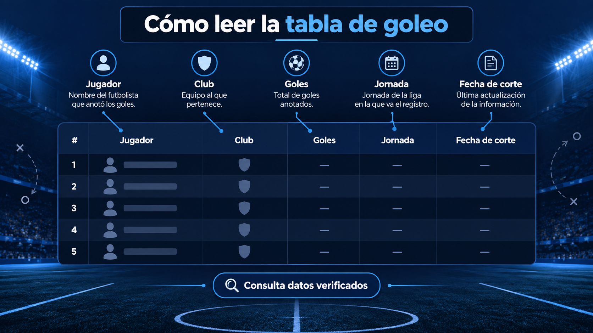

¿Quién lidera el goleo?
Salomón Rondón, de Pachuca, encabeza esta tabla con ocho anotaciones. Lucas Ocampos ocupa el segundo lugar; seis jugadores aparecen empatados con cuatro goles.
Cómo interpretar la tabla de goleo
La tabla ordena a los futbolistas por sus goles anotados en el torneo Apertura. Junto a cada nombre aparecen su club y el total registrado en el corte publicado. Sirve para seguir la carrera individual de los delanteros sin confundirla con la tabla general de Liga MX, que ordena a los equipos por puntos.
Un empate en anotaciones no significa necesariamente que dos jugadores ocupen la misma posición en todas las fuentes. La forma de ordenar esas igualdades puede depender del criterio editorial o del reglamento aplicable; por eso conviene revisar la cifra y la jornada antes de usar la lista como referencia definitiva.
Por qué importa la fecha de corte
En el fútbol mexicano, un gol de un partido pendiente o una corrección posterior puede modificar el orden. Esta página no pretende ser un marcador en vivo: muestra el último corte manual verificado. La fecha superior indica hasta qué jornada están revisados los datos y evita que una estadística anterior se presente como actual.
Para entender un cambio, consulta los resultados Liga MX de la fecha correspondiente. Si buscas cuándo vuelve a jugar un atacante o su club, revisa los próximos partidos y el calendario del torneo.
Tabla vigente y registros históricos
La tabla de goleo Liga MX 2026 responde a la temporada en curso; los máximos goleadores históricos resumen trayectorias completas. Compararlas ayuda a distinguir una racha en el máximo circuito de un récord acumulado durante varios campeonatos.
También puedes consultar la tabla de goleo de Liga MX Femenil por separado. Cada competencia tiene calendario, participantes y actualización propios.
Tabla de goleo Liga MX 2026
Consulta goleadores, goles y actualización por jornada. La tabla histórica y la tabla vigente responden a intenciones distintas.